本教程使用R语言中实现贝叶斯网络分析。 案例带有数据和源码, 可以帮助你快速使用贝叶斯网络完成自己的论文。
本教程前面介绍理论, 后面介绍实战, 如果理论看不懂, 可以略过。
在本文中，我们提出了一个名为easybgm的用户友好R软件包，它将强大的分析工具整合到一个连贯的软件包中，供应用研究人员使用。该软件包允许研究人员拟合任何类型的横截面数据，提取结果，并可视化结果，例如网络图、边缘证据图和结构不确定性图。我们介绍了该软件包，并通过两个示例演示了其用法。
教程资源
代码和数据下载地址:
链接：https://pan.quark.cn/s/082d560ddb84
网络分析已成为医学、社会科学和心理学研究的热门工具，它将心理结构视为相互作用的变量系统，并通过图模型估算变量间的条件依赖关系。近期，贝叶斯方法因能更准确地量化模型不确定性和评估边的存在与否而备受推崇，超越了传统频率论方法。然而，现有贝叶斯R软件包（如bgms、BDgraph、BGGM）通常需要较高的统计和编程经验。为此，我们推荐用户友好的easybgm软件包(作者Huth, K.B.S等)，它整合了上述功能，简化了贝叶斯图模型的估计流程，尤其适合经验有限的用户。easybgm提供模型拟合、结果提取（包括边缘包含贝叶斯因子、参数估计、后验结构概率）以及丰富的可视化工具（如网络图、边缘证据图、结构不确定性图），旨在降低贝叶斯网络分析的门槛，并通过实例演示其应用。
方法学背景
图模型是网络的一个子集，其中网络图编码了变量之间的概率关系（即，节点之间的链接未被观察到，但必须进行估计）。在图模型中，节点是随机变量，它们的成对关系——边——是条件依赖关系 。我们在这里关注无向图模型，其中边不暗示方向。
在实践中，我们对网络的两个方面感兴趣：底层网络结构
贝叶斯框架允许我们量化网络结构及其参数的不确定性。为了利用贝叶斯方法，我们必须首先在我们看到数据之前，指定某些参数值和网络结构的可能性。贝叶斯通过指定先验分布来做到这一点，先验分布是一种概率分布，它描述了每个参数值产生数据的置信度 。在许多情况下，我们对参数的值期望不大，因此指定一个默认的、弥散的先验。我们将在下面讨论先验分布的（默认）规范。观察数据后，使用贝叶斯规则将先验更新为后验分布。后验分布是一种概率分布，它描述了每个参数值产生我们观察到的数据的置信度。这个更新后的分布包含了我们关于网络结构及其参数的所有知识，包括我们看到数据之前的预期，以及我们从数据中学到的知识。形式上，我们可以将这个知识更新周期表示为
后验分布可以用来描述我们的网络及其估计相关的不确定性。接下来，我们详细阐述如何量化结构的不确定性（即，边包含在网络中的可能性）和参数估计的不确定性（即，边权重的确定性）。
结构不确定性 - 边的存在或缺失
在网络心理测量学中，我们主要关注网络的结构，即哪些边存在，哪些边缺失。例如，为了评估节点
：变量 和 之间存在一条边； ：变量 和 之间不存在边。
我们可以使用结构的后验分布（即
对于
有了后验边缘包含概率，我们就可以将这两个假设进行对比检验。在贝叶斯框架中，假设检验的工具是贝叶斯因子 。贝叶斯因子是一种衡量两个竞争模型或假设解释观测数据程度的指标，它表明哪种解释得到数据更强的支持。对于网络而言，贝叶斯因子用于比较边缘存在证据与边缘缺失证据。贝叶斯因子可以通过以下方式获得：
我们称之为包含贝叶斯因子，它被解释为数据中边缘包含（即条件依赖）证据的强度。反之，我们可以取倒数，
参数不确定性
为了量化参数不确定性，我们可以使用偏关联参数的后验分布
easybgm
软件包概述
easybgm 的开发旨在使 R 中横截面网络的贝叶斯分析更易于访问和用户友好。该软件包包含三个步骤，如图 所示。首先，它使用现有三个 R 软件包之一（BGGM 、bgms 和 BDgraph ）将贝叶斯图模型拟合到横截面数据。其次，easybgm 从相应的软件包拟合中提取相关结果，并将其转换为可用输出（即，包括边包含贝叶斯因子、参数估计和后验结构概率）。第三，可以使用一套广泛的自定义图来评估网络结果。这些图可视化了（除其他外）结构不确定性、边包含和排除的证据，以及边权重及其相应的不确定性（即，可信区间）。因此，easybgm 为用户提供了方便估计和解释网络结果的功能，而不会限制用户使用标准功能。
图1：easybgm软件包的工作流程。
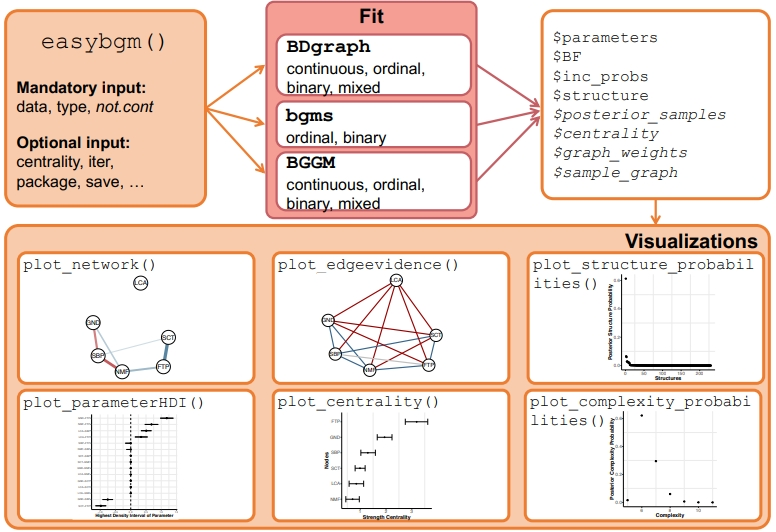
案例1:
数据和代码都在"教程资源"中的压缩包里。
下面，我们将使用Fowlkes 1988年收集的1979年高中生数学态度数据集来演示本软件包的功能。当时，女高中生选修的数学课程少于男生。“女性与数学”（WAM）中学讲座项目旨在通过提供积极的女性数学榜样来缩小这一差距，并增加女性对数学的兴趣。为了评估WAM项目，Fowlkes 1988进行了一项调查，以评估女学生对数学成就的态度。学生们需要回答“我未来的工作需要数学”这一陈述以及相关问题。该数据集包含1,190个观测值，涉及六个二元变量：对上述陈述的回答（同意 vs. 不同意）、WAM讲座出席情况（是 vs. 否）、性别（男 vs. 女）、学校类型（城市 vs. 农村）、学科偏好（数学/科学 vs. 文科）和未来计划（大学 vs. 工作）。
首先，我们加载 easybgm 软件包，并加载 women_math 数据集：
1 | library(easybgm) |
估计
easybgm 的核心函数是 easybgm，它需要两个强制参数：data 和 type。data 是一个 type 指定了数据中变量的类型，从而指定了要估计的模型，可接受的参数包括 "continuous"、"binary"、"ordinal" 和 "mixed"。
"continuous"：估计多元正态数据的高斯图模型（GGM）。"binary"：估计 Ising 模型（Ising 1925）。"ordinal"：估计 序数MRF（Marsman 2023），支持具有不同类别的变量（包括二元和序数混合）。"mixed"：估计 高斯 Copula 图模型（Dobra 2011），用于连续、序数和二元数据。它需要一个额外的not_cont参数（长度为的向量， 1表示非连续，0表示连续），该参数将非连续数据转换为潜在连续变量以进行GGM估计。如果包含两个以上类别且无序的分类变量（例如，种族、宗教），用户应避免使用"mixed"，因为模型会错误地将其视为有序变量（Mohammadi 2017）。
有了这两个强制参数，easybgm 就可以开始估计。默认情况下，easybgm 使用 BDgraph 处理连续和混合数据，使用 bgms 处理序数和二元数据。在我们的示例中，我们指定 data 和 type = "binary"，这将触发使用 bgms 进行模型拟合：
1 | fit = easybgm(data = women_math, type = "binary") |
用户还可以指定可选参数。package 参数允许偏离默认设置，可接受 "BGGM"、"BDgraph" 或 "bgms"。save 参数（默认 FALSE）决定是否保存 centrality 设置为 TRUE（默认 FALSE）将启动每个采样器迭代的强度中心性估计。iter 指定迭代次数（示例中为10,000次，但建议100,000次以上以最小化采样波动）。此外，用户可以将参数传递给底层拟合软件包，例如知情先验规范和采样选项。知情先验规范将在下一节详细介绍。采样选项包括预热期（例如 bgms 和 BDgraph 中的 burnin 参数），以及 BDgraph 特有的采样器类型（algorithm 可以是RJMCMC或BDMCMC）（Mohammadi 2019）。有关所有可能附加参数的完整列表，请参阅帮助文件：?bdgraph、?bgm 和 ?explore（适用于 BGGM）。综合所有参数，一个完整的 easybgm 规范如下所示：
1 | fit = easybgm(data = women_math, |
先验概率
easybgm 允许用户在拟合时将网络模型的结构和参数的先验分布指定为可选参数。对于三个底层软件包中的每一个，先验分布和函数参数都不同。先验可以分为两组：结构先验（或边缘包含概率）和参数先验。这两者将在下面详细讨论。有关每个软件包和先验类型的不同先验参数选项的概述，请参见表1。
表1：指定先验的不同选项，列显示不同的底层软件包，行显示先验类型。
| BDgraph | bgms | BGGM | |
|---|---|---|---|
| 结构先验 | g.prior |
edge_prior inclusion_prob beta_bernoulli_alpha beta_bernoulli_beta |
|
| 参数先验 | df.prior |
interaction_prior cauchy_scale threshold_alpha threshold_beta |
prior_sd |
网络结构的先验概率
不同的结构可能有不同的密度或存在的边数，结构先验反映了研究人员在观察任何数据之前对哪种结构更合理或更合适的信念。例如，如果研究人员认为更密集的结构比稀疏的结构更有可能（例如，所有节点测量单个结构），他们可能希望指定结构先验。在某些情况下，结构先验参数还可以用于指定特定边缘的先验包含概率。例如，如果先前的研究一致表明两个节点之间存在边缘，则可以为该特定边缘指定更高的概率。
在 BDgraph 中，结构先验的参数是 g.prior。该参数定义了边缘包含的先验概率，可以是0到1之间的单个值，也可以是0到1之间的边缘特定概率矩阵。值为0表示排除，1表示包含。默认值为0.5，这意味着每个边缘被排除和包含的先验概率相同。较高的值将更多的概率质量分配给更密集的结构（即更多的现有边缘），较低的值将更多的概率质量分配给更稀疏的结构（即更少的现有边缘）。
bgms 使用参数 edge_prior 指定结构先验。此参数定义了边缘先验的类型。可以是默认选项 "Bernoulli" 或 "Beta-Bernoulli"。Bernoulli 分布允许直接指定边缘包含概率，使用参数 inclusion_prob。后一个参数等同于 BDgraph 中的 g.prior，也可以是单个值或具有边缘特定值的矩阵。默认值为0.5，这使得每个边缘被包含或排除的先验概率相等。如果结构先验是 "Beta-Bernoulli"，则边缘包含的先验概率遵循 Beta 分布，其参数可以指定为 beta_bernoulli_alpha 和 beta_bernoulli_beta（详见 Sekulovski 2023）。两者默认值均为1。如果它们相等，则具有相同边缘数的图被赋予相同的先验概率。如果 beta_bernoulli_alpha 大于 beta_bernoulli_beta，则更多的概率质量分配给边缘的包含，即更密集的网络，反之亦然。
BGGM 包没有指定结构先验的选项。
权重的先验
参数先验表示在所选结构中对边权重的先验信念（即
BDgraph 使用 G-Wishart 分布作为边权重的先验分布（Mohammadi 2017, Roverato 2002）。参数 df.prior 可用于指定 G-Wishart 分布的自由度，该分布是模型逆协方差矩阵的先验分布。BDgraph 中自由度的默认值设置为3，其值必须大于2。较低的自由度会使分布更分散，使得较大的边权重更合理。另一方面，较小的自由度会使先验分布更集中在零附近，使得较大的边权重值更不合理。
bgms 包提供了多种选项来指定模型参数的先验分布（Marsman 2023）。对于边权重，先验类型可以通过参数 interaction_prior 指定。它可以是 "UnitInfo"，对应于Unit Information先验（KassWasserman 1995），或者是 "Cauchy"，对应于以零为中心的柯西分布。后者是默认值。如果先验是 "Cauchy"，则尺度参数可以通过 cauchy_scale 指定，默认为2.5。阈值参数遵循一个转换的beta-prime先验分布。beta-prime分布的参数可以指定为 threshold_alpha 和 threshold_beta。两者默认值均为0.5。如果它们相等，则分布关于零对称。较小的值会给出更分散、信息量更少的先验。如果alpha大于beta，则分布向左偏斜，反之亦然。
BGGM 只有一个选项可以通过参数 prior_sd 指定先验分布。这是矩阵-F先验分布（Mulder 2018）的标准差，它是模型协方差矩阵的先验分布。它大致是beta分布的尺度。较大的值将更多的质量分配给远离零的参数值。prior_sd 参数的默认值为0.25。
我们的软件包 easybgm 包含了每个软件包所有先验分布的默认设置。我们鼓励贝叶斯估计新手用户坚持使用默认设置。如果指定了有信息的先验分布，建议进行鲁棒性检查以评估结果的稳定性。图2展示了一个示例先验鲁棒性检查。
easybgm 的输出结果
easybgm 函数返回一个列表，其中包含估计过程的结果，可用于多种目的。
首先，研究人员可能希望测试特定边是否应被包含或排除。这有两个重要的信息来源：列表元素 inc_probs 中包含的后验包含概率（PIP），以及 inc_BF 中包含的包含贝叶斯因子。PIP 是一个 inc_BF。包含贝叶斯因子 structure 中，因此指示了所有具有包含证据的边的网络结构。
其次，研究人员可能希望了解边权重的强度和符号（即正或负）。此信息包含在 parameters 对象中，它是一个
虽然大多数网络分析软件包估计单个网络结构并在此基础上进行参数估计，但像 BDgraph 和 bgms 等软件包会从其后验分布中模拟底层结构，并可以使用这些样本来确定与估计结构相关的不确定性。向量 structure_probabilities 包含所有模拟结构的后验概率。这些后验概率在区间 graph_weights），它是一个长度为模拟结构数量的向量，详细说明了特定结构被模拟的绝对次数；因此，structure_probabilities sample_graphs 编码了模拟结构的实际组成（即哪些边在模拟结构中，哪些不在）。sample_graphs 是一个向量，其条目是长度为
如果用户将 save 指定为 TRUE，软件包将提取参数估计的后验样本，这是一个 centrality = TRUE），fit 也将包含一个
为了快速概览输出，easybgm 使用 S3 类配合 summary() 函数。摘要输出包含四个部分。第一部分列出了使用的软件包、变量数量和数据类型。第二部分是边缘特定信息的矩阵。每条边缘作为一行列出，包含后验参数估计、后验包含概率、包含贝叶斯因子和边缘分类。分类根据包含贝叶斯因子指示边缘是包含、排除还是不确定。用户可以通过 evidence_thresh 设置贝叶斯因子分类的阈值，默认值为10。如果包含贝叶斯因子大于10，则边缘被分类为包含；如果小于
摘要输出的第三部分提供了汇总的边缘信息，列出了网络中已包含、已排除和不确定边缘的数量，以及可能的边缘总数。这使用户可以快速了解网络的稳定性和密度。已分类边缘（即被归类为包含或排除）的数量越高，网络越稳定。相反，如果网络中不确定边缘的百分比很高，则边缘的存在和缺失是不确定的，研究人员应避免得出强有力的推论。最后的输出部分是对结构不确定性的描述，显示了访问的结构数量、可能的结构数量（即
1 | summary(fit, evidence_tresh = 10) |
1 | > summary(fit, evidence_thresh = 10) |
可视化
边缘证据图
第一步是测试在底层网络结构中是否存在边存在的证据，或者是否缺乏足以得出任何结论的证据。此信息包含在后验包含概率或贝叶斯因子中，可以通过边缘证据图进行可视化。边缘证据图根据假设检验的结果对边进行着色：蓝色表示包含证据，红色表示排除证据，灰色表示缺乏证据。
可以使用 plot_edgeevidence 函数获取该图。唯一的强制参数是 output，它是通过 easybgm 函数获得的拟合结果。还有几个可选参数。
evidence_thres 是贝叶斯因子的截止值，用于将证据分类为包含、排除或不确定。如果边的贝叶斯因子大于此阈值，则将其包含；如果小于此阈值的倒数，则将其排除。介于两者之间的任何值都被视为不确定。默认阈值为10。随着节点数量的增加，图变得更难以阅读和解释。因此，用户可以选择只显示边的子集。split 参数将图在包含贝叶斯因子为1处分成两个图，创建一个包含有包含证据的边的图，另一个包含有排除证据的边的图。默认值为 FALSE。另一方面，show 参数指定要显示哪些边，可以是包含的、排除的或不确定的边的集合，或它们的组合。如果用户指定 "all"（默认值），则显示所有边。为了改善图的布局，用户可以添加任何 qgraph 包已知的额外参数，例如添加标签、增加节点大小和更改节点颜色。边缘证据图如图3a所示，可以通过以下方式获得：
1 | plot_edgeevidence(fit, evidence_thres = 10, split = FALSE, show = "all") |
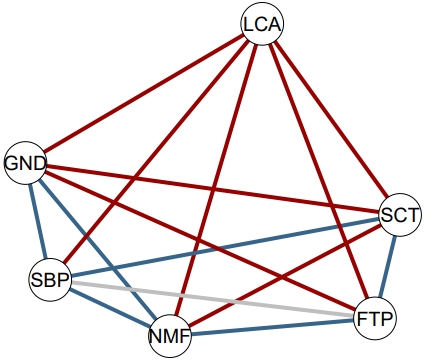
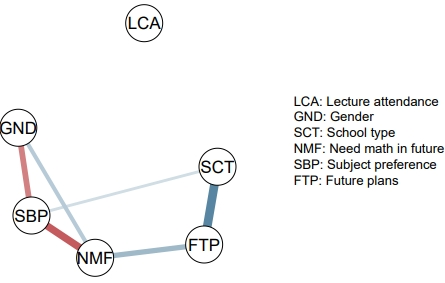
图3：(a) 边缘证据图显示包含或排除的证据。在此图中，蓝色边缘表示后验存在证据的边缘，红色边缘表示缺失证据，灰色边缘表示证据不足以得出任何结论。(b) 网络图，其中边缘表示存在边缘的边缘权重。边缘的粗细对应于边缘权重的值，颜色表示正（蓝色）和负（红色）关系。
网络图
在测试了边的存在性之后，评估存在边的边权重可能会很有趣。此信息可以使用网络图进行可视化。该图使用 easybgm 的输出作为输入，通过以下方式生成：
1 | plot_network(fit, exc_prob = 0.5, dashed = FALSE) |
用户可以指定要显示的边。默认情况下，easybgm 显示中位数概率图（Barbieri 2020），该图排除了所有后验包含概率小于0.5的边。根据具体研究问题，用户可以通过 exc_prob 参数更改排除边的阈值。当前的网路图不区分具有充分包含证据的边和具有不足包含证据的边。为了指示证据不足的边，用户可以使用 dashed 参数更改线条类型。当设置为 TRUE 时，证据不足的边将显示为虚线。默认值为 FALSE。包含贝叶斯因子小于10的边被视为不确定，并显示为虚线。但是，用户可以使用 evidence_thresh 参数覆盖默认的证据阈值。同样，用户可以将 qgraph 的任何参数添加到函数中以改善布局。对于女性和数学数据，网络图如图3b所示。
最高密度区间
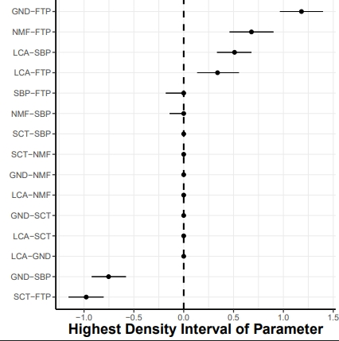
图4：该图显示了女性和数学数据变量之间关系估计参数的最高密度区间。接下来，我们可能对估计的边权重相关的不确定性感兴趣。此信息包含在边权重后验的最高密度区间中。可以通过参数最高密度图进行可视化。该图显示了边权重的后验估计及其95%最高密度区间。它通过以下方式调用：
1 | plot_parameterHDI(fit) |
该函数只接受一个参数，即 output 对象，它是 easybgm 的拟合结果。用户可以向底层 ggplot2 函数添加额外的参数。对于女性和数学数据，后验最高密度图如图4所示。X轴表示边权重的强度。Y轴表示节点
结构图
easybgm 中包含三个不同的图，允许用户可视化结构及其不确定性。第一个图绘制了所有模拟结构的后验结构概率。这再次使用 easybgm 函数的 output。除了显示后验结构概率，该图还可以显示最可能结构的贝叶斯因子与所有其他模拟结构相比。用户可以通过将 as_BF 设置为 TRUE 来切换到贝叶斯因子。
后验结构图可以通过以下方式调用：
1 | plot_structure_probabilities(fit, as_BF = FALSE) |
并显示在图5a中。
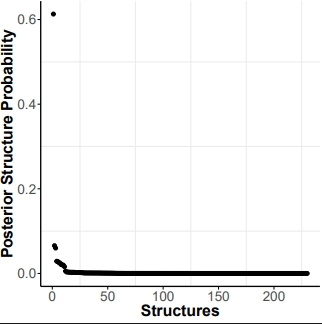
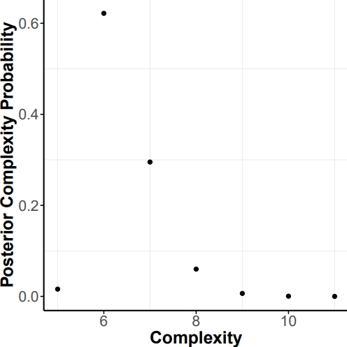
图5：(a) 后验结构图显示了女性和数学数据中所有模拟结构的后验结构概率分布。(b) 后验复杂性图显示了图复杂性（即存在边缘的数量）的后验概率分布。
第二个结构图，即后验复杂性图，显示了结构复杂性（即存在边的数量）的后验分布。同样，只需要 easybgm 函数的 output。此外，用户可以指定底层 ggplot2 包的参数。
1 | plot_complexity_probabilities(fit) |
第三个结构图显示了最终的图结构；一个网络显示所有具有包含证据的边（即包含贝叶斯因子大于1的边）。该图通过以下方式生成：
1 | plot_structure(fit) |
它需要 easybgm 函数的 output。用户可以指定额外的 qgraph 参数。一个示例显示在图6中。
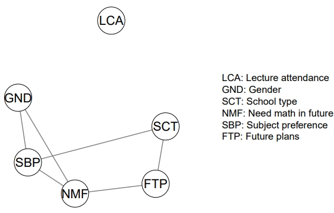
图6：结构图显示了女性和数学数据的结果估计结构。每个链接代表后验包含概率大于0.5的边缘。
中心性图
为了总结网络，已提出了中心性度量来聚合每个节点的结果。其中一个特定的中心性度量是强度中心性，它表示节点在网络中与其他节点连接的程度。可以为后验参数分布的每个样本（即迭代）获得中心性估计。因此，可以量化中心性估计的不确定性（Huth 2021）。强度中心性及其不确定性可以通过以下方式生成的图进行可视化：
1 | plot_centrality(fit) |
并显示在图7中。节点按其强度中心性排序，最中心化的节点位于顶部。点表示强度中心性估计，误差条是可信区间，表示与中心性估计相关的不确定性。可信区间越宽，对特定强度中心性估计的确定性越低。当区间非常宽时，研究人员在得出强推断结论时应谨慎。
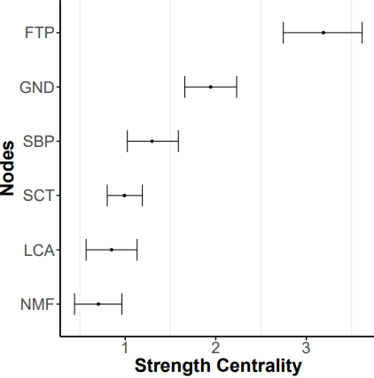
图7：女性和数学数据集变量对应的节点中心性图。
先验鲁棒性
在贝叶斯方法中，检验和估计取决于先验分布的指定。评估我们的推断对先验选择的敏感性是一种良好的实践。为了评估这一点，我们进行了先验鲁棒性检查。我们对女性数学数据进行了五次分析，每次都改变先验边缘包含概率（即edge_prior = 0.1, 0.3, 0.5, 0.7, 0.9）。完整的女性数学数据集有许多观测值和少量变量，因此在不同的先验规范下，边缘分类没有变化。为了说明先验概率对边缘包含影响的更真实场景，我们随机选择了200个观测值，取了数据的一个子集。图8显示了在不同先验包含概率下边缘分类的变化。我们看到包含边缘的数量保持不变，而不确定边缘的数量增加，代价是排除边缘的数量减少。在这个数据子集中，边缘包含对先验选择敏感，并且不能确定排除的边缘。
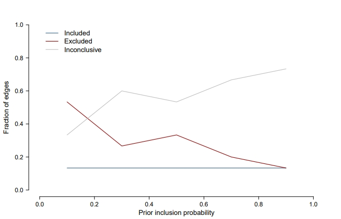
图8：女性和数学数据集子集的先验鲁棒性。它显示了在不同先验包含概率下边缘分类如何变化。X轴显示先验边缘包含概率，Y轴显示边缘的比例，每条线代表一个边缘分类。
好的，这是您提供的文章的中文 Markdown 版本，引文只保留人名：
案例2：自我价值偶然性量表
我们将通过第二个示例进一步阐述该软件包。这次数据集由连续变量组成，easybgm 将使用 BDgraph 来拟合模型。该数据集是关于“自我价值偶然性量表”的，同样可以从我们提供的代码和数据压缩包里提取（即 csws.csv）。该数据集包含35个变量和680个观测值。变量采用7点李克特量表进行测量。使用 lavaan R软件包 (Rosseel 2012)，我们通过验证性因子分析将35个项目聚合成七个子量表，并提取了每个个体的潜在子量表得分。该网络基于七个子量表的潜在得分进行估计：家庭支持、竞争、外貌、上帝之爱、学业能力、美德和他人认可。
这些变量都构成一个单一量表，因此它们之间都应该相互关联。我们通过指定一个略微倾向于存在边缘的先验边缘包含概率来将此信息纳入估计中（即在 BDgraph 中 g.prior = 0.7）。
easybgm 中的完整规范如下：
1 | fit = easybgm(data = csws_scales, |
结果如图 3 所示。尽管所有子量表构成一个单一构念的量表，但并非所有节点都相关。四个边缘显示了条件独立的证据，即子量表之间没有关系，另外四个边缘显示证据不足以得出包含或排除的结论（参见图 3a）。其余边缘显示节点之间存在条件依赖的证据；即使在控制了其他子量表的影响之后，相应的两个子量表仍然相关。存在的边缘大多是强正相关（参见图 3b）。最强的边缘存在于“学业能力”和“竞争”之间。三个边缘显示负相关：“美德”和“外貌”、“竞争”和“他人认可”，以及“上帝之爱”和“外貌”。“上帝之爱”子量表与其他所有子量表的连接最少且最弱。实际上，它与另外三个子量表的关系显示出强烈的缺失证据。因此，该子量表似乎与量表中的其他子量表分离，这表明它衡量了自我价值偶然性的一个不同方面。“通过上帝之爱获得的自我价值”不一定与自我价值的其他方面相关。
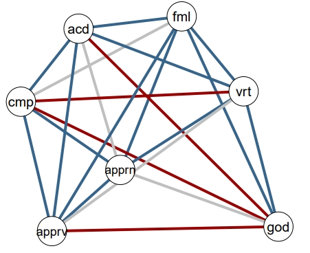
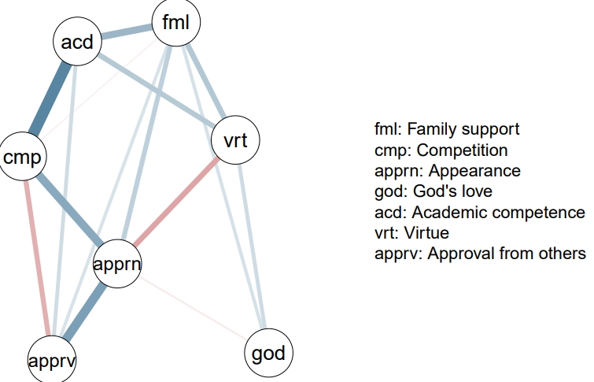
图 3：(a) 边缘证据图显示了包含或排除的证据。在该图中，蓝色边缘表示存在后验证据的边缘，红色边缘表示不存在证据，灰色边缘表示证据不足以得出任何结论。(b) 网络图，其中边缘表示估计存在的偏关联。边缘的粗细对应于效应的强度，颜色表示正（蓝色）和负（红色）关联。
总结评论
网络方法在社会科学，尤其是（临床）心理学中越来越受欢迎。最近的贝叶斯进展使我们能够通过对不确定性进行可靠量化，从而实现更稳健的推断，从而克服现有频率论方法的常见批评 (Huth 2023, Marsman 2022, Fried 2017, McNally 2021)。将贝叶斯分析应用于网络的优势是显而易见的，并且很可能进一步推动该领域的发展 (Marsman 2023, Williams 2020)。检验条件独立性是使用网络生成因果假设的基石 (Sekulovski 2023, Ryan 2022)。由于所需的编程技能，这种优势一直被很大一部分研究人员所忽视。有了 easybgm，我们降低了所需的编程经验门槛。通过这样做，我们使贝叶斯方法学的优势能够被整个研究社区所利用，这对于稳健的推断、理论构建以及整个领域的发展至关重要。
easybgm 面向经验不足的R用户。他们将能够从具有潜在缺点的频率论估计转向网络的贝叶斯分析，从而改进他们的推断。这得益于其简洁的代码、默认的先验选项和全面的可视化套件。经验丰富的R用户也将从这个软件包中受益。他们仍然可以使用底层软件包更复杂的功能，例如知情先验和采样选项，同时受益于用户友好的输出。最重要的是，两类用户都将受益于全面的可视化选项套件。
easybgm 针对社会科学而非医学和神经科学领域的研究人员进行优化，因为后者的模型要大得多。尽管如此，这两个领域的研究人员都能够使用 easybgm 的功能来改进其结果的可视化和可解释性。easybgm 的未来版本将侧重于添加更多关于贝叶斯采样过程的诊断信息，例如迹线图和收敛度量，以及先验鲁棒性检查。
总而言之，easybgm 为研究人员提供了一个用户友好的工具，用于估计和解释贝叶斯网络分析的结果，而不会限制用户使用标准功能。虽然图模型的贝叶斯方法已经存在多年，但其在应用研究中的使用一直有限。我们希望 easybgm 能够弥合这一差距，并使日益发展的网络心理测量学领域能够完全过渡到使用贝叶斯估计进行稳健的不确定性量化。